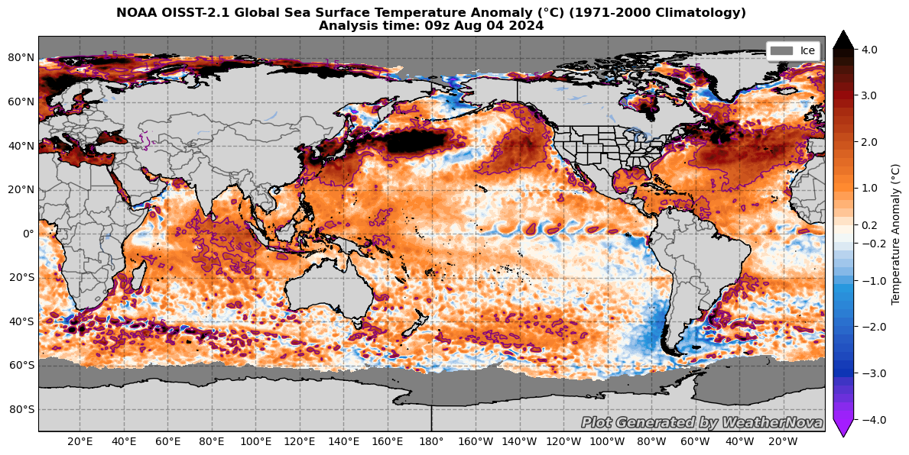
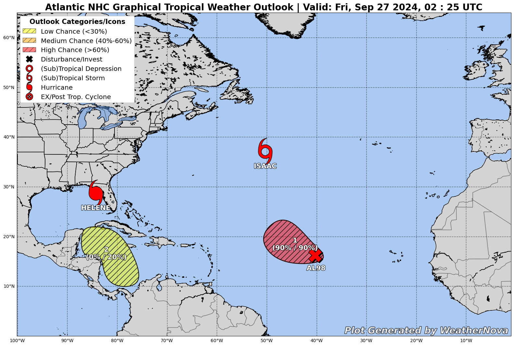
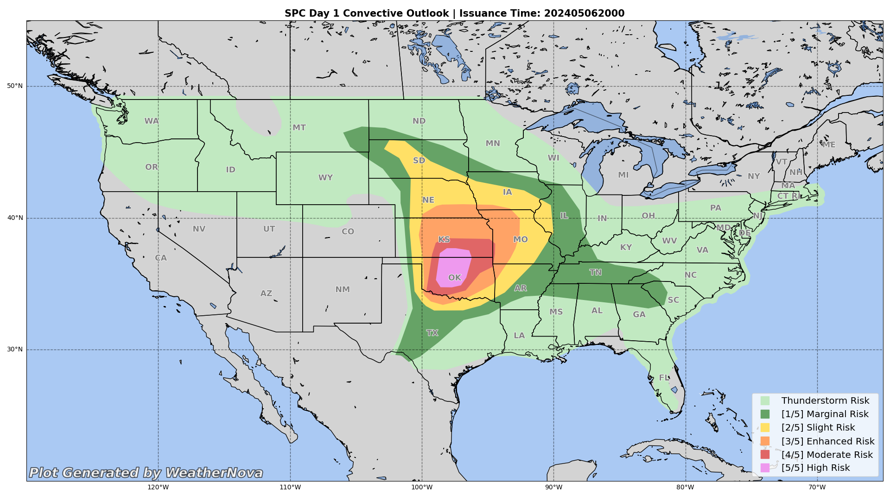

Being able to analyze data in realtime is important, one of the main focuses of WeatherNova is to provide realtime analysis plots that are easy to understand but also easy to access for users.
Some examples will be shown here, though there is a growing list of available plots to generate. These include:
Global Sea Surface Temperature (SST) Maps
Global Sea Surface Temperature Anomaly (SSTA) Maps
All the plots listed are available on the WeatherNova Discord bot.
Global Sea Surface Temperature Maps
Sea Surface Temperatures (SSTs) are one of the most important factors in realtime analysis. There's several reasons for this,
Firstly, in relation to tropical cyclones, warm water is a tropical cyclones fuel, without warm water tropical cyclones cannot exist.
Secondly, SST patterns tend to influence most of the weather across the world, as these patterns tend to take longer to change than patterns
over land.
North Atlantic SST map for July 29th, 2024
The example shown above is the SST analysis map (OISSTv2.1) for July 29th, 2024. This map shows SST, as analyzed, in degrees Celsius.
SST maps are excellent to see exactly how much fuel is available for tropical cyclones, though it isn't the best to see how warm waters are relative to average.

Global SSTA map for August 4th, 2024
In this example, we now show the departure from average (1971-2000 Climatology) to get a reference of how warm/cold relative to average SST patterns are.
This can help forecasters see what patterns are in place now, and compare each pattern historically to make more accurate predictions.
Both of these maps are available on the WeatherNova Discord bot, through the $sst [region] and $ssta [region] commands. It is customizable, primarily with the location.
As seen with the SST graphic, it is possible to select specific regions for these maps, for more info please view the documentation or simply input the command $help in Discord.
In future, the goal is to have each plot shown here available for free online, though for now we're sticking to a simple Discord bot.
NOAA Maps
Along the SST/SSTA maps available, various maps created by branches of NOAA are also available for easy plotting via the WeatherNova Discord bot.
Firstly, the National Hurricane Center (NHC) Tropical Weather Outlooks (TWOs) which shows active tropical cyclones, but also highlights areas of potential tropical cyclone formation.
These maps can be plotted simply by the command $two [region], where [region] can be any basin across the world.

NHC Tropical Weather Outlook on September 27th, 2024
The Storm Prediction Center (SPC) issues regular Convective Outlooks highlighting areas of severe weather potential and the magnitude of the threat ranging from a Level 1/5 Marginal Risk to a Level 5/5 High Risk.
These can be plotted simply by using the command $spc [day] where [day] is just the convective outlook day the user requests.

SPC Convective Outlook for May 6th, 2024
The plots shown here are only a select few of all available realtime analysis plots, more are available on the WeatherNova Discord bot. To see all available commands, see the $help command.
Feedback is always appreciated, if you'd like to leave feedback on any of the products listed here and/or suggest any future products, please fill out the form here.